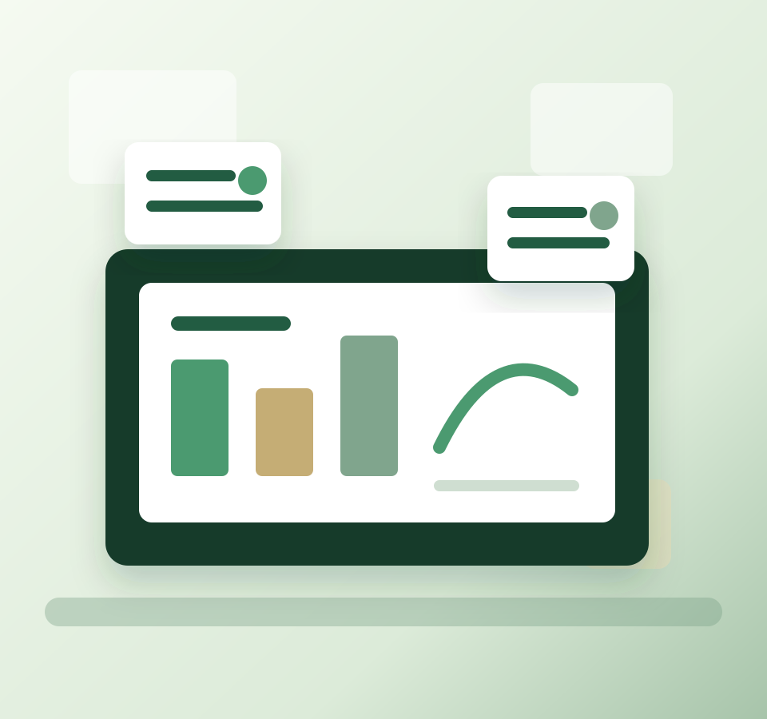

Delivered through process optimization and structured change management initiatives.

About Me
I bring structure to ambiguity and turn project goals into measurable execution.
I am a results-driven project management professional with experience leading cross-functional teams, managing scope and milestones, improving reporting visibility, and translating strategic objectives into practical execution plans.
My background spans project leadership at Annie Guard through BWTech @ UMBC's MD New Venture Program and operations-focused project execution at LINDE LSAS. I work across stakeholders, risks, data, and process improvement to keep teams aligned and outcomes measurable.
Impact Snapshot
Selected outcomes from project and operations work.
Improved team accountability by implementing a RACI framework across workstreams.
Converted stakeholder insights into prioritized deliverables and actionable plans.
Planned and executed plant shutdown work while improving downtime control.
Experience
Experience
Operations Engineer (Projects)
LINDE LSAS | Oct 2022 - Jun 2024
LINDE LSAS: process improvement, cost control, dashboards, and shutdown planning.
As Operations Engineer (Projects), I contributed to three cross-functional projects with on-time completion while coordinating operations, maintenance, procurement, and vendor teams.
Cost & Schedule Control
Applied Earned Value Management using CPI and SPI to identify variance and drive corrective action.
Reporting Automation
Built Power BI and Advanced Excel dashboards that improved reporting visibility by 33% and reduced manual effort by 50%.
Shutdown Execution
Mapped dependencies and optimized resources for five plant shutdown projects, reducing downtime by one hour.
Project Lead
Annie Guard, BWTech @ UMBC MD New Venture Program | Jan 2025 - May 2025
Annie Guard: project execution for a 5-month venture engagement.
Project Lead for Annie Guard through BWTech @ UMBC's MD New Venture Program, January 2025 to May 2025.
Milestone Delivery
Led a 4-member cross-functional team, structured sprint cadences, and delivered all project milestones on schedule.
Execution Clarity
Built WBS, project charters, and detailed timelines to clarify deliverables and reduce rework.
Stakeholder Alignment
Conducted customer discovery and translated stakeholder requirements into prioritized work.
Performance Visibility
Tracked KPIs, risks, milestones, Kanban activity, and status reporting using Smartsheet.
Projects
Applied analytics projects built for operational decision-making.
Portfolio work focused on supply chain analytics, KPI monitoring, risk detection, business intelligence, and executive-ready recommendations.
Supply Chain Analytics | Business Intelligence
Supply Chain Health Monitor
Developed a Supply Chain Health Monitoring system that analyzes operational KPIs, identifies emerging supplier risks, and generates executive-ready insights to support proactive supply chain decision-making.
Business impact: transformed raw SKU, supplier, inventory, quality, and logistics data into a 3-page Tableau dashboard that surfaces understocked SKUs, supplier quality risks, and route/carrier cost optimization opportunities.
- Built an automated monitoring framework for supply chain performance metrics across 100 SKUs, 5 suppliers, and 5 Indian cities.
- Developed KPI-driven health scoring and risk identification logic using structured SQL analysis.
- Generated executive-level operational summaries covering revenue, profitability, inventory health, inspection quality, and supplier performance.
- Applied data analytics and business intelligence techniques to support proactive procurement, supplier management, and logistics decisions.
Project outcomes and insights
Problem Solved
Created visibility into inventory gaps, supplier quality issues, and logistics cost variation so operations teams can prioritize reorders, vendor reviews, and route optimization.
Key Insights
Skincare drove the largest revenue share, only 24% of SKUs were in healthy stock, Supplier 4 showed a 0% inspection pass rate, and Route A Sea emerged as the lowest-cost option.
Execution Excellence
How I move work from strategy to delivery.
Scope & Milestone Planning
Define scope, dependencies, deliverables, timelines, resource needs, and governance rhythm.
Stakeholder Management
Align expectations across technical, operational, vendor, and leadership stakeholders.
Risk & Change Control
Identify risks early, track issues systematically, and manage change without losing delivery focus.
Data-Driven Reporting
Use KPIs, dashboards, root-cause analysis, and performance metrics to guide decisions.
Core Competencies
Project leadership supported by data, process, and delivery discipline.
Project Management
Lifecycle management, scope planning, milestones, stakeholders, resources, budgets, risks, and issues.
Performance Management
KPI tracking, dashboards, data analysis, root-cause analysis, and continuous improvement.
Cross-Functional Coordination
Clear ownership, sprint rituals, stakeholder updates, escalation paths, and structured documentation.
Process Improvement
Lean Six Sigma thinking, workflow optimization, change management, and measurable efficiency gains.
Power BI
Advanced Excel
SQL
SAP HANA
Smartsheet
Asana
Trello
SharePoint
Notion
MS Office 365
Project Libre
Agile
Scrum
Kanban
Lean Six Sigma
Waterfall
Education
Education
B.Tech, Chemical Engineering
VNIT Nagpur | 2018 - 2022
Master of Engineering Management
University of Maryland, Baltimore County | Aug 2024 - May 2026
Certificates
Certificates
Lean Six Sigma Green Belt
CSSC credential focused on structured process improvement.
Google Project Management Certificate
Project planning, stakeholder communication, agile delivery, and execution fundamentals.
Google AI Essentials
Practical AI concepts for productivity and business workflows.
Certified Associate in Project Management
CAPM certification in progress.
Let's Connect
Open to project management, operations, and process improvement roles.
I am interested in work where I can lead structured execution, improve performance visibility, and help cross-functional teams deliver measurable outcomes.